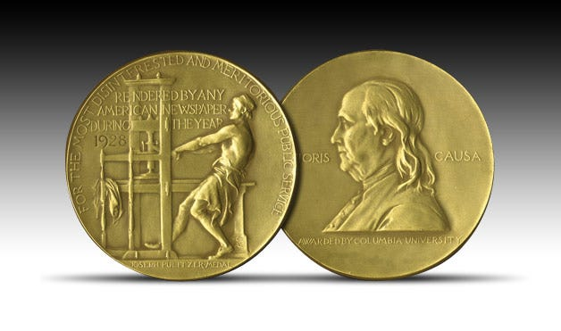

The 2026 Pulitzer Prize for Fiction: What to Watch For
The 2026 Pulitzer Prize for Fiction is announced on 4 May. Five American novels that could win, what the jury is watching for, and why it matters.

On 4 May 2026, Columbia University will announce the 2026 Pulitzer Prize winners. The Fiction category will name one winner and three finalists from a field of American novels and short story collections published during the 2025 calendar year. Last year, that call landed on Percival Everett’s James, a reimagining of Huckleberry Finn told from the point of view of the enslaved man Jim. It was the consensus pick.
This year is less obvious. There is no James. There is no single book that has pulled away from the pack in the way Everett’s did. What there is instead is one of the strongest years for American literary fiction in recent memory, with at least five novels that could plausibly take the prize on their own merit.
What follows is not a prediction. Predictions are a game for Twitter. This is a look at the books in contention, what makes each of them matter, and what they tell you about the state of the American novel going into the Pulitzer announcement.
When is the 2026 Pulitzer Prize announced?
The 2026 Pulitzer Prizes will be announced on Monday 4 May 2026 at 3pm Eastern Time, which is 8pm BST for those of us watching from the UK. The announcement covers all 23 Pulitzer categories, including the Prize for Fiction, which recognises, in the Pulitzer Board’s own language, distinguished fiction published in book form during the year by an American author, preferably dealing with American life.
That last clause matters. The Pulitzer has a patriotic streak that the Booker and the International Booker do not. American life, American voices, American subject matter. Writers working outside those borders, however significant their work, are not eligible. For the official rules, eligibility criteria, and the live announcement on 4 May, the Pulitzer Prize website is the only source that matters.
Last year’s benchmark
Everett’s James set a bar. It was the first novel in years that critics, readers, booksellers, and the Pulitzer board agreed on without reservation. The Washington Post’s coverage of the 2025 announcement captured the mood. It was the novel the prize was waiting for.
That kind of consensus is rare. In most years, the jury picks a book that feels like a compromise, or a surprise, or an outlier. The 2024 winner, Jayne Anne Phillips’s Night Watch, blindsided almost every predictor. The 2023 prize was a tie between two books nobody had picked as co-favourites. Going further back, the 2011 winner was A Visit from the Goon Squad by Jennifer Egan, which nobody saw coming either.
What this means for 2026 is that the field is genuinely open. The jury has permission to pick strangely. You should expect strangely.
The contenders
Five American novels to watch, all published during the 2025 calendar year, all plausible.
Audition by Katie Kitamura
Kitamura’s fifth novel has been the most-cited book on 2025’s best-of lists, according to Lit Hub’s ultimate aggregator of critical consensus, which processes dozens of year-end lists from outlets like The New Yorker, The New York Times, and The Atlantic. Audition is a novel about an actress meeting a young man for lunch, and then unravelling into competing narratives about identity, performance, and the roles we inhabit for other people.
Kitamura writes the kind of spare, unnerving prose that Pulitzer juries have historically rewarded. She is American, born in California, and the Pulitzer’s preference for books dealing with American life fits the novel’s interrogation of performance and selfhood in the current cultural moment. If the jury wants to reward sentence-level mastery, this is their book.
Buy Audition from Bookshop.org →Flashlight by Susan Choi
Choi won the National Book Award for Trust Exercise in 2019. Flashlight, her new novel, traces one family’s history across Korea, Japan, and the American Midwest. It was longlisted for the National Book Award and shortlisted for the Booker Prize, which is unusual crossover recognition for an American novel.
The Pulitzer has a complicated relationship with the National Book Award. In most years, the two prizes do not agree. When they do agree, it is because the book in question is undeniable. James was undeniable. Flashlight might be the next.
Buy Flashlight from Bookshop.org →Buckeye by Patrick Ryan
Buckeye is a multigenerational family drama set in small-town midcentury America. Reviewers have compared it to Elizabeth Strout’s Olive Kitteridge, which won the Pulitzer in 2009, and Jeffrey Eugenides’s Middlesex, which won in 2003. That is the kind of comparison that either wins a Pulitzer or destroys a novel’s chances. There is no middle ground.
What makes Buckeye interesting is its quietness. The Pulitzer has rewarded quiet books before. Olive Kitteridge is the template. A Thousand Acres by Jane Smiley, which won in 1992, is another. If the jury wants to signal a return to plain realism after a decade of formally ambitious winners, Buckeye is the book they will reach for.
Buy Buckeye from Bookshop.org →The Antidote by Karen Russell
Russell has been a Pulitzer finalist before, for Swamplandia! in 2012. The Antidote is set in a fictional Nebraska town during the Great Depression and the dust bowl drought. It follows several characters reckoning with buried memory and the town’s secrets. Literary Hub included it in their 43 favourite books of 2025, which is the kind of editorial anointment that tends to matter for prize consideration.
Russell is one of the few American novelists currently working at the intersection of literary and speculative fiction. The Pulitzer has historically been suspicious of genre elements, but the 2013 win for Adam Johnson’s The Orphan Master’s Son and the 2017 win for Colson Whitehead’s The Underground Railroad suggest the jury is more willing to reward novels that reach beyond strict realism. The Antidote fits that pattern.
Buy The Antidote from Bookshop.org →The Slip by Lucas Schaefer
Schaefer’s debut novel won the 2025 Kirkus Prize. It is a 500-page Texas picaresque about a sixteen-year-old boxer who vanishes after a training session at an Austin gym, and the unravelling that follows. The critical comparisons have been to Denis Johnson and Barry Hannah, which is the kind of comparison a debut writer dreams of and almost never earns.
Debuts do not usually win the Pulitzer. But the 2021 winner, Louise Erdrich’s The Night Watchman, was preceded in the field by a debut finalist, and the 2018 winner Less by Andrew Sean Greer was a mid-career surprise that looked nothing like the typical Pulitzer pick. A debut taking the prize in 2026 would be unusual but not unprecedented.
Buy The Slip from Bookshop.org →What to watch for on 4 May
Three things.
First, whether the jury picks a formally ambitious book or a quiet realist one. That choice will tell you what kind of novel the Pulitzer thinks American fiction should be right now. Kitamura and Russell sit on one side of that line. Ryan sits on the other. Choi and Schaefer are somewhere between.
Second, whether the winner is a book you have already heard of or one you have not. The Pulitzer occasionally surfaces books that most critics missed. Night Watch in 2024 was one of those. If 2026 produces a surprise, it will not be on any predictor’s list. It will be on no list. The jury reads everything, and that is the point.
Third, whether the winner is American in the expansive sense or the narrow sense. James was a book about American slavery, written by a Black American novelist, set in the American South. That is the Pulitzer’s gravitational centre. A win for Flashlight, a novel about Korean and Japanese history as much as American assimilation, would pull the prize’s definition of American life wider. That would matter beyond the prize itself.
Why this matters for writers
Prize season is easy to dismiss as theatre. It is theatre. But it is also the clearest annual signal about what publishers, booksellers, and librarians are going to champion for the next twelve months. The book that wins the 2026 Pulitzer for Fiction will be on shelves, reading lists, and book club picks for the rest of the decade. Its sentences will shape what gets submitted to literary magazines. Its structure will show up in debut novels published in 2027 and 2028. That is how prizes propagate through the ecosystem.
If you are a writer, you do not need to read all five of these books. You should probably read one. For craft and compression, read the Kitamura. For ambition and historical weight, read the Russell. For voice and momentum, read the Schaefer. For the kind of quiet realism that wins prizes without drawing attention to itself, read the Ryan. For the question of what an American novel can be in 2026, read the Choi.
For more on the writers shaping contemporary American fiction, see our literary reviews and our craft essays.
This page contains Bookshop.org affiliate links. If you buy through them, Tumbleweed Words earns a small commission at no extra cost to you.